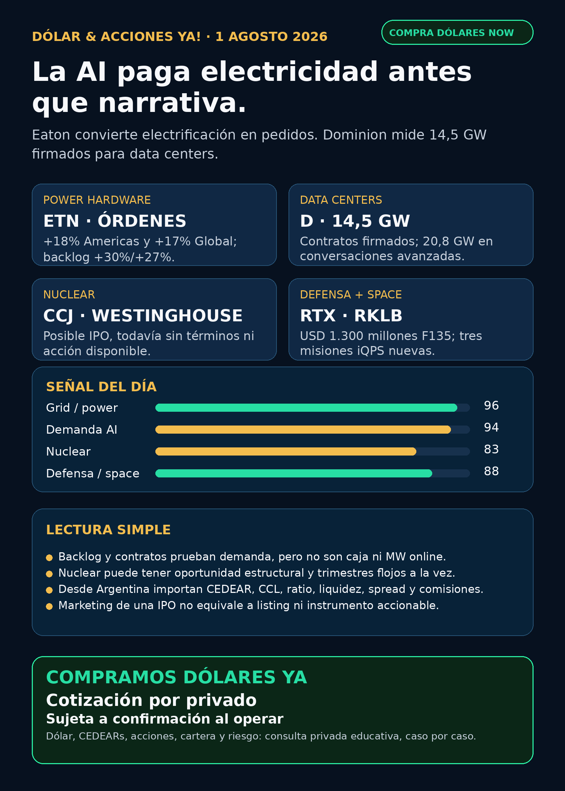

La AI paga electricidad antes que narrativa.
Eaton convierte electrificación en pedidos; Dominion mide 14,5 GW firmados para data centers y nuclear muestra oportunidad con riesgo.
Texto WhatsApp
Placa del día

Dólar & Acciones YA — Stock Radar — 01/08
Fecha de edición: 2026-08-01. Research educativo para Argentina y carteras globales. No es recomendación personalizada de compra ni de venta.
Lectura simple del día
La AI paga electricidad antes de pagar narrativa. Eaton (ETN) mostró órdenes y backlog eléctricos creciendo a doble dígito, mientras Dominion (D) informó 14,5 GW de contratos firmados para data centers y otros 20,8 GW en conversaciones avanzadas. En criollo: la demanda de cómputo ya se ve en pedidos de equipamiento y proyectos de red, no sólo en promesas de software.
La segunda lección es que una buena historia estructural no elimina la volatilidad. Westinghouse presentó confidencialmente un borrador para una posible IPO, pero todavía no hay precio, fecha ni acción disponible. A la vez, Cameco (CCJ) reportó net earnings trimestrales 92% menores por timing de entregas. Nuclear puede ser un carril importante y tener trimestres flojos.
Esto está ordenado por valor educativo y calidad de señal, no como ranking de compra. Buena empresa ≠ buena inversión al precio actual ≠ buen instrumento para Argentina ≠ tamaño correcto dentro de una cartera.
Capa Argentina: dólar, MEP/CCL y CEDEARs
Datos públicos consultados a las 08:46 ART:
- BlueLytics: dólar oficial vendedor ARS 1.511,00 y blue vendedor ARS 1.560,00; última actualización 31/07 19:45 ART.
- CriptoYa: USDT ask ARS 1.582,01 y bid ARS 1.572,46; actualización 01/08 08:44 ART.
- MEP AL30 24hs ARS 1.505,41 y CCL AL30 24hs ARS 1.580,51; ambos tienen timestamp de cierre del 31/07 16:59 ART. No son cotización intradiaria del broker.
En criollo: el MEP permite dolarizar pesos mediante bonos dentro de Argentina. El CCL conecta precios locales con el exterior y suele impactar en los CEDEARs. Un CEDEAR representa una fracción de una acción extranjera, pero tiene ratio, spread —diferencia entre mejor comprador y vendedor—, liquidez, comisiones y CCL implícito. Antes de mover plata real se confirma el book en IOL/PPI o broker vivo.
ETN, D, CCJ, RTX, RKLB, AMZN, NVO y AZN son instrumentos globales. CEDEAR, ratio, volumen, spread y disponibilidad local no fueron revalidados en esta corrida. Sin instrumento claro quedan como radar educativo/global, no como ejecución Argentina.
Tesis central
El segundo peaje de AI es electricidad física. Eaton convierte electrificación en órdenes y backlog. Dominion convierte la demanda de data centers en contratos de potencia medibles. La cadena incluye generación, transmisión, subestaciones, transformadores, switchgear, cooling, permisos y construcción.
El caveat es clave: backlog no es caja inmediata y contratos de MW no son capacidad energizada. Faltan capex, permisos, financiamiento, ejecución y protección del usuario regulado. La tesis se fortalece, pero el precio de entrada y el instrumento siguen siendo decisiones humanas separadas.
Señales educativas del día
1. Grid y equipamiento eléctrico — Eaton (ETN)
- Qué pasó: en Q2, Electrical Americas creció 13% orgánico, con órdenes +18% y backlog +30%. Electrical Global creció 15% orgánico, con órdenes +17% y backlog +27%. Eaton elevó la guía de crecimiento orgánico 2026 a 9–10%.
- Fuente primaria (31/07): SEC Exhibit 99: https://www.sec.gov/Archives/edgar/data/1551182/000155118226000027/etn06302026exhibit99.htm
- Lectura en criollo: el hardware que mueve y distribuye electricidad ya recibe pedidos concretos.
- Riesgo: el filing no separa qué porcentaje vino de data centers; no atribuir todo el crecimiento a AI.
- Accionable internacional/global: acción NYSE
ETN; falta precio y valuación fresca para análisis humano. - Accionable local Argentina: CEDEAR, ratio, volumen y spread no verificados. Estado local: no accionable por ahora.
- Estado: señal fortalecida.
2. Utility y demanda de data centers — Dominion Energy (D)
- Qué pasó: operating earnings Q2 de USD 0,75 por acción y guía anual reafirmada en USD 3,45–3,69. El deck muestra 14,5 GW de contratos de data centers firmados y 20,8 GW de demanda en conversaciones avanzadas.
- Fuente primaria (01/08): SEC Exhibit 99: https://www.sec.gov/Archives/edgar/data/715957/000119312526326812/d-ex99.htm
- Lectura en criollo: ya se puede medir cuánto quieren consumir los data centers, aunque todavía no todo esté conectado.
- Riesgo: contratos y pipeline no equivalen a MW online ni revenue inmediato; pesan transmisión, regulación, capex y financiamiento.
- Accionabilidad: NYSE/global directa; vía local no verificada.
- Estado: fortalece tesis con riesgo de ejecución.
3. Nuclear: Westinghouse y Cameco (CCJ)
- Qué pasó: Westinghouse presentó confidencialmente ante SEC un draft registration statement para una posible IPO. No hay tamaño, rango, fecha ni efectividad pública.
- Fuente primaria (31/07): Cameco/Westinghouse: https://www.sec.gov/Archives/edgar/data/1009001/000119312526327250/d307413dex991.htm
- Contracara: Cameco reportó net earnings Q2 92% menores; el timing de entregas afectó el trimestre.
- Fuente primaria (31/07): Cameco Q2: https://www.sec.gov/Archives/edgar/data/1009001/000119312526326768/d125942dex991.htm
- Lectura en criollo: una posible IPO puede abrir un instrumento nuevo, pero todavía no existe para el público. El moat nuclear no convierte cada trimestre en una línea recta.
- Accionable internacional/global:
CCJsí cotiza; Westinghouse sigue no accionable directo. - Accionable local Argentina: acceso/CEDEAR de
CCJno verificado. - Estado: tesis estructural fortalecida / trimestre operativo débil.
4. Defensa industrial — RTX (RTX)
- Qué pasó: Pratt & Whitney obtuvo un contrato undefinitized de casi USD 1.300 millones para repuestos y soporte F135 durante FY2026. El motor equipa las tres variantes del F-35.
- Fuente primaria (31/07): RTX Newsroom: https://www.rtx.com/news/news-center/2026/07/31/rtxs-pratt-whitney-awarded-1-3-billion-f135-sustainment-contract
- Lectura en criollo: defensa real también es installed base, repuestos, mantenimiento y recurrencia; no sólo drones o titulares geopolíticos.
- Riesgo: los términos finales todavía pueden ajustarse; vigilar margen, supply chain y ejecución.
- Accionabilidad: NYSE/global directa; instrumento local no revalidado.
- Estado: señal fortalecida.
5. Space y recurrencia — Rocket Lab (RKLB)
- Qué pasó: Rocket Lab sumó tres misiones Electron dedicadas para iQPS desde fines de 2027. Es la tercera reserva multi-launch del cliente en menos de un año y lleva el total contratado a 18 lanzamientos.
- Fuente primaria (31/07): Rocket Lab Updates: https://rocketlabcorp.com/updates/rocket-lab-secures-multi-launch-deal-with-iqps-for-three-dedicated-missions/
- Verificación: URL y texto pasaron gate
ALLOW; el browser directo mostró Cloudflare. - Lectura en criollo: la recurrencia del mismo cliente y el cross-sell de componentes son mejores señales que un lanzamiento aislado.
- Riesgo: no se informó valor, margen ni calendario de reconocimiento.
- Accionabilidad: Nasdaq/global directa; CEDEAR o vía local no verificados.
- Estado: señal fortalecida.
6. Pharma: resultado clínico versus aprobación
- Novo Nordisk (
NVO): ZEUS redujo inflamación, pero no eventos cardiovasculares: HR 0,99; IC95% 0,88–1,11. Novo discontinuará ziltivekimab. Fuente primaria: https://www.sec.gov/Archives/edgar/data/353278/000117184326005109/f6k_073126.htm - AstraZeneca (
AZN): la Comisión Europea aprobó Datroway en primera línea de cáncer de mama triple negativo metastásico para pacientes no candidatos a inmunoterapia. Fuente primaria: https://www.sec.gov/Archives/edgar/data/901832/000165495426007050/a7288o.htm - Replimune (
REPL): adcomm favorable 10-3, pero todavía no es aprobación FDA; PDUFA 28/10/2026. Fuente del sponsor: https://www.sec.gov/Archives/edgar/data/1737953/000110465926088857/tm2621708d1_ex99-1.htm - Lectura en criollo: bajar un biomarcador no alcanza si el resultado clínico importante no mejora. Un voto favorable tampoco reemplaza la decisión final del regulador.
- Estado:
NVOdebilita esa tesis específica;AZNfortalece;REPLsigue binaria y de alto riesgo.
7. Hyperscaler y private AI — Amazon (AMZN)
- Qué pasó: el 10-Q mostró un ajuste al alza de USD 50.486 millones en Q2 en inversiones privadas, principalmente Anthropic. AWS también amplió compromisos multianuales con OpenAI y Anthropic.
- Fuente primaria: Amazon 10-Q: https://www.sec.gov/Archives/edgar/data/1018724/000101872426000026/amzn-20260630.htm
- Lectura en criollo: Amazon vende compute/chips y además captura parte de la revaluación de private AI.
- Riesgo: compromiso multianual no es revenue reconocido; mark-to-market privado no es caja operativa.
- Accionabilidad:
AMZNes acción pública; Anthropic y OpenAI no lo son. Comprar Amazon no equivale a comprarlas directamente. - Estado: fortalece tesis / vigilar calidad de ganancia.
Watchlist priorizada de hoy
Ordenada por valor educativo/señal, no como ranking de compra.
- RKLB: señal fortalecida por tres misiones iQPS nuevas y 18 reservas totales del cliente; monto no divulgado.
- NVDA, PLTR, TSM, MU, GOOGL/GOOG, AAPL, TSLA, ASML: revisados, sin señal primaria nueva más fuerte. No rellenar con precio sin mercado o broker vivo.
- HOOD: vigilar; no apareció filing operativo nuevo superior.
RVIIprepara roadshow, pero no confundir marketing con efectividad del fondo. - RVI: sin filing/fact sheet nuevo material. Sigue siendo fondo cerrado, no operating company; requiere NAV, premium/descuento, holdings, volumen, spread y acceso actualizados.
- SNDK, CBRS, AVGO: revisados sin primary nuevo material suficiente para elevar hoy.
- Gold /
GLD/GOLD/B: metal, ETF, minera y tickerBno son equivalentes. Sin instrumento exacto no se publica precio ni accionabilidad.
Energía, grid y power hardware
Generación y utilities
- Dominion (
D): señal fortalecida por 14,5 GW firmados y 20,8 GW en conversaciones avanzadas para data centers. Es pipeline, no capacidad online. - Pampa (
PAMPlocal /PAMADR): terminó la transición de Los Nihuiles y Mendoza recibió activos concesionados. Falta cuantificar MW, EBITDA, compensaciones y efecto en guidance. Fuente primaria: https://www.sec.gov/Archives/edgar/data/1469395/000129281426004020/ex99-1.htm YPF,TGS/TGSU2,CEPUyVISTfueron revisadas sin catalyst operativo nuevo superior.
Nuclear y uranio
- Cameco (
CCJ): tesis estructural vigente, trimestre débil por timing de entregas. - Westinghouse: radar alto, todavía no accionable; faltan filing público, términos, efectividad y listing.
Grid, transformadores y equipamiento
- Eaton (
ETN): señal nueva de mayor calidad por crecimiento, órdenes y backlog de dos dígitos. - Carril obligatorio revisado: Hitachi Energy/Hitachi (
6501.T/HTHIY), Siemens Energy (ENR.DE, no Siemens AG), GE Vernova (GEV), HD Hyundai Electric (267260.KS), Hyosung/HICO (298040.KS), Virginia Transformer y Delta Star. - No apareció primary nuevo suficiente en esta ventana para esos nombres. Corea/OTC no es acceso simple desde Argentina; Virginia Transformer y Delta Star siguen privadas/no accionables directas.
Cooling e infraestructura de data centers
- Modine (
MOD): desde abril separa Data Centers como segmento y proyecta retener Data Centers + Commercial HVAC después de separar Performance Technologies. Fuente: https://www.sec.gov/Archives/edgar/data/67347/000110465926088569/mod-20260630x10q.htm - La tesis física incluye chillers, dry coolers, precision air handlers, rear-door exchangers, coolant distribution e immersion; no sólo transformadores.
Pharma / salud
NVO: ZEUS no redujo MACE; debilita ziltivekimab, no todo Wegovy/Ozempic.AZN: Datroway aprobado en UE para una población definida; fortalece tesis, pero faltan precio, reembolso, adopción y revenue.REPL: voto 10-3 favorable; sigue binaria porque la FDA no está obligada por el comité.LLY/ Foundayo-orforglipron: revisado; la aprobación ya indexada fue 01/04/2026, no catalyst fresco de agosto.- M&A y patentes fueron revisados; no apareció material primario superior.
Radar amplio fuera de watchlist
- Qualcomm (
QCOM): completó Modular el 28/07 y emitió 17.826.506 accionesQCOMcomo consideración. Falta revenue y contribución verificable. Fuente SEC: https://www.sec.gov/Archives/edgar/data/804328/000110465926089234/tm2621612d2_8k.htm - Defensa visible:
AVAV, GE Aerospace (GE),RTX,LMT,NOC,GD,HWM,KTOS,BA,ITA/XARrevisados. La señal nueva fuerte fueRTX; el resto quedó sin primary superior. - Space/orbital AI:
SPCX/SpaceX, Starlink, Starship,RKLB, sat-to-mobile y orbital compute revisados.RKLBtuvo señal;SPCXno mostró filing material nuevo. - Autonomous mobility/physical AI: Tesla, Waymo/Alphabet, Uber, Zoox/Amazon, Joby, humanoides y robotics revisados; sin primary nuevo suficiente.
- Fintech/AI agents:
HOODsigue como rails/agentes financieros con guardrails. Paper/read-only, ledger, límites y aprobación humana antes de dinero real. - Crypto gobernado: sin input on-chain nuevo ni señal institucional superior. Carril separado de educación, infraestructura y proxies regulados; no token trade.
Private markets e instrumentos empaquetados
RVII: comenzó marketing pre-roadshow; la N-2 todavía no fue declarada efectiva y las acciones no pueden venderse ni aceptar ofertas. Roadshow previsto para 03/08. Fuentes: https://robinhood.com/us/en/newsroom/RVII-roadshow-aug3/ y https://www.sec.gov/Archives/edgar/data/2131040/000162828026049234/rvii-nx2a1july2026.htm- Accionabilidad de
RVII: no accionable por ahora. Faltan efectividad, precio, shares/float, holdings finales, liquidez, spread, broker y vía local/global. RVI: fondo cerrado público USA, no operating company; sigue audit-only hasta actualizar NAV, premium/descuento, holdings, sponsor sales, volumen y spread.DXYZ,ARKVX,AGIX,XOVR,VCX, Forge: revisados sin filing/fact sheet nuevo suficiente. No venderlos como exposición limpia a private tech.
Red flags / hype para ignorar
- “Todo el crecimiento eléctrico de Eaton viene de AI”: no está demostrado por el filing.
- “14,5 GW firmados por Dominion = 14,5 GW online”: falso; contratos y energización son etapas distintas.
- “Westinghouse ya salió a bolsa”: falso; el draft es confidencial y faltan términos/efectividad.
- “Cameco tuvo un trimestre malo = tesis nuclear rota”: simplificación; separar timing operativo de estructura sectorial.
- “Adcomm favorable = aprobación FDA”: falso. La decisión final es otra etapa.
- “RVII empezó marketing = ya se puede comprar”: falso; la N-2 sigue no efectiva.
- “Amazon = comprar Anthropic/OpenAI”: falso. Es una operating company con exposición económica indirecta.
- “Gold / GLD / GOLD / B son lo mismo”: falso. El instrumento exacto sigue bloqueado.
Qué mirar después
ETN: mix exacto de data centers, backlog conversion, márgenes y valuación.D: qué contratos pasan a interconexión/energización, capex, regulación y ratepayer protection.- Westinghouse/
CCJ: filing público, tamaño, rango, shares, float, uso de fondos y efectividad. RTX: definitization, margen, supply chain y ritmo de sustainment F135.RKLB: valor de las tres misiones, margen y calendario de reconocimiento.REPL: documentos regulatorios y PDUFA 28/10.RVII: verificar desde 03/08 efectividad, precio, holdings, NAV, listing y liquidez.- Argentina: MEP/CCL intradiario, CEDEAR disponible, ratio, book, spread y comisiones si una tesis pasa a análisis humano.
Portfolio/base Mi Simulación
La cartera de Ricardo fue liquidada, devuelta y terminada según estado vigente del 24/06. No hay posiciones activas ni P&L real que reportar. Stock Radar queda como vigilancia para una próxima compra o un nuevo inversor.
Recibo visible de cobertura
Revisado: watchlist base, AI infra/semis, energéticas argentinas, transformadores/power hardware, cooling, pharma/GLP-1/oncology, defensa/aeroespacial, space/private wrappers, autonomía/physical AI, fintech/AI agents, crypto gobernado y mercado amplio. Los carriles sin señal primaria nueva fuerte quedaron marcados, no omitidos.
Servicio privado
Dólar · Acciones · Consulta privada. Si querés comprar o vender dólares, entender CEDEARs, armar una cartera o revisar riesgo, se ve por privado caso por caso. Cotización sujeta a confirmación al momento de operar.
Disclaimer
Esto es research educativo para decisión humana. No es asesoramiento financiero personalizado ni instrucción de compra/venta.